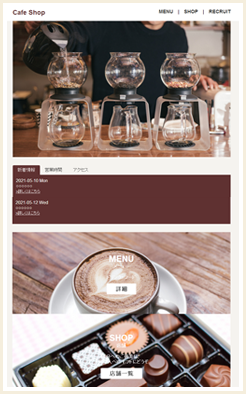
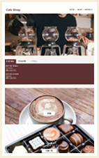

TOP
【架空】カフェサイトのHPページ制作
PC版デザイン

SP版デザイン

【架空】カフェサイトのHPページ制作
制作：2021/05
対応デバイス：PC版／SP版（レスポンシブ）
使用言語：HTML／SCSS／Javascript／jQuery
画像素材：
フリー写真素材ぱくたそ
ポイント：
トップ画像はなるべく小さなスペースで、お店の雰囲気がより伝わるようにスライドショーを使用しました。
重要な情報は上部に、その他はカテゴリーごとにバナーを作成し、下層ページへ誘導することでトップページをスッキリさせています。
https://y-portfolio.github.io/cafe-shop/